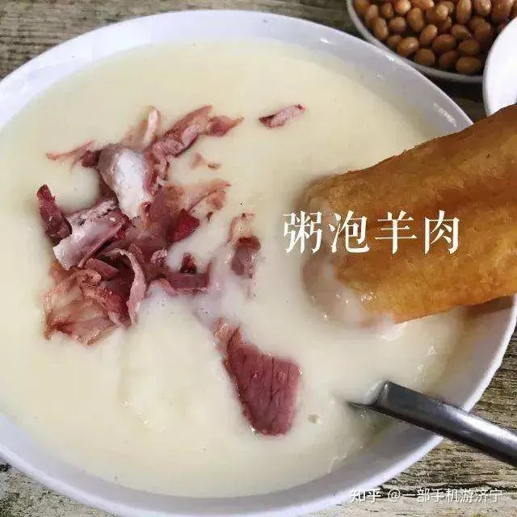
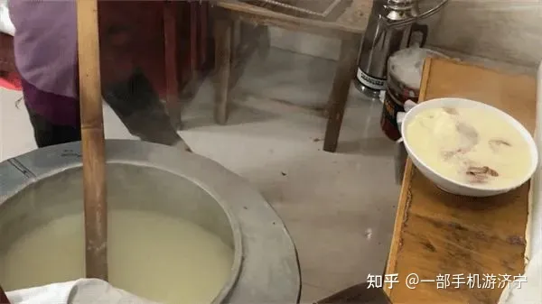
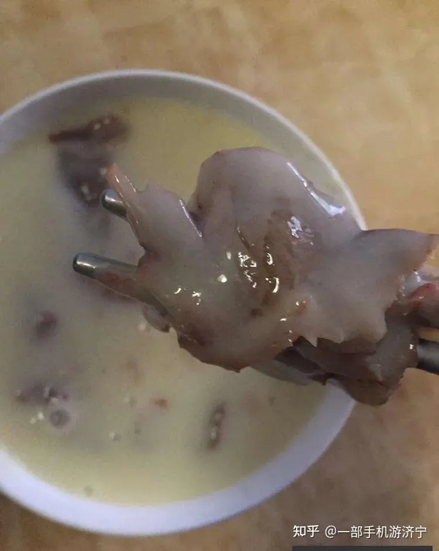
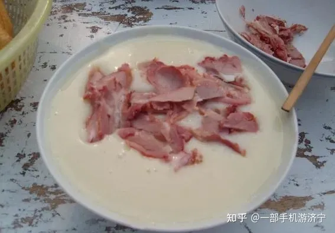

圣城特色早点“羊肉泡粥”，属于曲阜的专属味道
发布时间: 2023-09-07 4859 次浏览
-
在山东济宁，曲阜人喝粥的历史久矣。每天清晨，在曲阜的大街小巷，到处都会有熙熙攘攘的粥摊。粥是用黄豆和小米磨成面后熬制而成。再将烧羊肉切碎或切片后放入粥中，故名曰羊肉泡粥。
其味道鲜美，营养丰富，老少皆宜。喝上一碗热乎乎的羊肉泡粥，香味扑鼻，清爽顺口，稠而不粘，再配以馓子、油条或大烧饼等作为早餐，已成为众多曲阜人的习俗。羊肉泡粥，只有早上才有的卖，中午和晚上是没有的。如果起晚了，人家早收摊了。到路边早点摊上，一人要上一碗粥，切一小碟羊肉，再要上几根油条，呼呼喝一口粥，咬一口油条，那是满嘴的香。
在好多卖油条的摊点前，都有卖羊肉的在那儿，粥和油条是一家的，而羊肉却是单独的老板了。羊肉是在家早已用各种配料煮好的，根据顾客的需要，老板切下你喜欢的部分，有人喜欢羊肝什么的，而有人就喜欢吃细腻的羊肉。老板把羊肉切成薄薄的片儿，然后用一种纸给包好，或带回家，或在摊上吃。把羊肉泡在粥里，粥和羊肉一同入口，粥里渗进了肉的美味，羊肉里带着米粥的香气，竟然一丝一毫都尝不出羊肉的那种膻味了。
说起“粥”这种东西，如果我们打开《随园食单》一书，在“饭粥单”一卷中，可以见到很多种作粥的方法，独不见曲阜人意义上的“粥”。南方人所谓的粥，一般是直接熬制粟米之类，再佐以辅料。北人常吃的“棒子渣粥”，也仅是磨碎玉米而已；人们常吃的大米汤、小米汤，都是粥之属。但是，在曲阜所谓“粥”是有明确所指的。这种粥的做法很独特，先用小米面和水，或用笼布，或用锣，篦去渣滓，取其细腻精华；再熬制一锅豆浆，撇去浮沫，再灌入做好的小米面汤同煮，再撇去浮沫，即成。熬成的粥，或洁白，或微黄，入口细滑，余香不散——这才是曲阜人所说的粥。
羊肉粥有三大要素，除了粥，还有羊肉和豆子。羊肉，要老汤来煮才好，各种香料也要齐全；清汤少味煮出来的肉，与我们的粥是不相搭配的。煮透的肉，也要手工切，厚薄要均匀，倘若再掺入少许羊杂碎的薄片，口味会更佳。豆子最好是刚采摘的青豆，青里透着黄，黄里泛着青。羊肉泡粥的羊肉的做法，选羊肉是关键，先看山羊还是绵羊，如果山羊要选用前膀因山羊的前膀肉质细嫩鲜美，如绵羊的话则选用后腿为好。为啥要这样选哪，咱当地有：前山羊后绵羊之说，的确有道理。吃的时候羊肉切的越薄越好。
对于睡了一晚上，腹中空空的人们来说，早上来一碗热乎乎的糊粥，可以说是一种享受了。喝粥也是有讲究的，不用筷子。要一手端着碗，一手拿一根油条，用油条把粥里的羊肉赶到碗边，呼噜一口，粥伴着羊肉，吸入口中，嚼两口，再咬一口油条，油条经粥的蘸裹，酥脆伴着滑爽，再辅以软烂的羊肉的那股肉香味儿，萦绕在舌尖，每咀嚼一下，便会有一次不同的滋味。除了羊肉泡粥，曲阜还有很多好吃的，比如孔府菜、煎饼卷大葱、小鸡泡面、水饺等，来到曲阜“文能提笔论古今，武能喝酒定乾坤”，有句话咋说“万丈红尘一杯酒，千秋大业一盏茶”，南北方文化差异深有体会。小伙伴们，曲阜特色早点“羊肉泡粥”，你品尝过吗？
黄河文化旅游宣传平台
联系电话: 17753010787
版权所有：山东大学技术团队
技术支持：山东大学技术团队